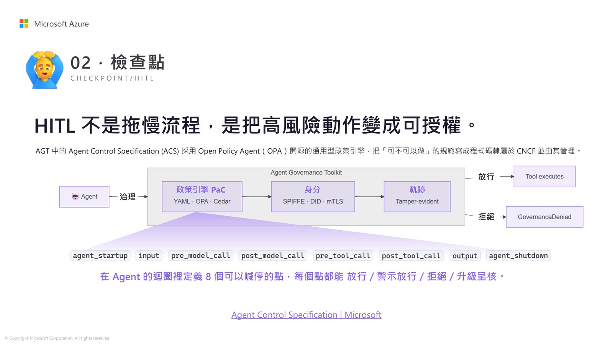
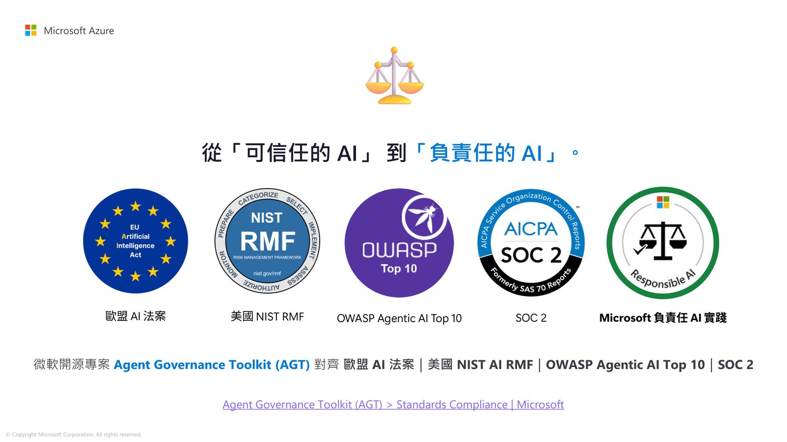
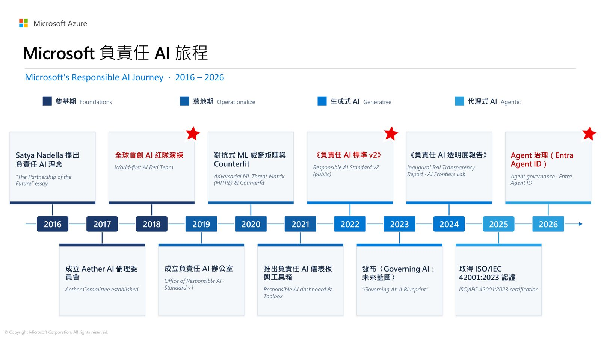
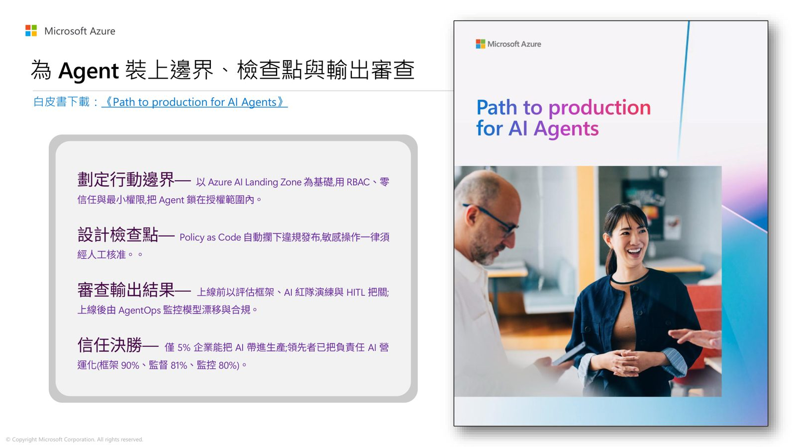

摘要
講者從 Microsoft Build 2026 的核心訊息出發，說明企業導入 Agentic AI 時面臨的關鍵命題已從「AI 能做什麼」轉變為「企業敢讓 AI 自己做什麼」。講題以「信任＝邊界＋檢查點＋稽核」為框架，介紹 Microsoft 開源的 Agent Governance Toolkit（AGT）如何透過系統架構落實邊界管控、Human-in-the-loop 檢查點與可稽核追蹤，協助企業對齊歐盟 AI 法案、NIST AI RMF、OWASP Agentic AI Top 10 與 SOC 2 等標準。
重點整理
- 信任被拆解為三大支柱：邊界（Boundary）、檢查點／HITL（Checkpoint）、稽核（Auditability）
- Agent Governance Toolkit（AGT）以 RFC 2119 規範語言，把治理政策變成可自動把關的執行引擎
- Agent Control Specification（ACS）採用 CNCF 旗下的 Open Policy Agent（OPA）將「可不可以做」寫成 Policy as Code
- AGT 對齊歐盟 AI 法案、美國 NIST AI RMF、OWASP Agentic AI Top 10 與 SOC 2 等國際標準
- Microsoft 負責任 AI 旅程始於 2016 年 Satya Nadella 提出理念，2025 年通過 ISO/IEC 42001 認證，2026 年推進 Agent 治理（Entra Agent ID）
重點圖片／架構圖




背景與挑戰
講者指出，Microsoft Build 2026 傳達的核心訊息是企業開發者要的不只是讓 agent 跑起來的方法，而是「信任」。當 Agent 開始自己讀取資料、自行採取行動，命題便從「AI 能為我們做什麼」翻轉為「我們敢讓它自己做什麼」，企業必須先建立信任基礎才能在安全邊界內擴張 AI 應用。
治理框架：邊界、檢查點與稽核
講者將信任拆解為「邊界＋檢查點＋稽核」三大要素：邊界定義 Agent 該被允許做什麼；檢查點／HITL 定義何時該停、誰能喊停；稽核則確保事後查得到紀錄。Microsoft 的 Agent Governance Toolkit（AGT）以系統架構（而非文件）落實邊界，涵蓋身分驗證、權限分級、稽核紀錄與資安閘道等實際功能。
技術重點
在檢查點層面，AGT 中的 Agent Control Specification（ACS）採用 CNCF 管理的 Open Policy Agent（OPA）通用型政策引擎，將「可不可以做」的規範寫成 Policy as Code，並在 Agent 迴圈中定義 8 個可喊停的節點，可放行、警示放行、拒絕或升級呈核。在稽核層面，則透過符合 GenAI 標準的 OpenTelemetry 追蹤鏈，把每一次模型呼叫、工具呼叫都變成可查詢、可評測的數據軌跡。
案例與成果
AGT 對齊歐盟 AI 法案、美國 NIST AI RMF、OWASP Agentic AI Top 10 與 SOC 2 等標準，協助企業進行法遵對齊、風險盤點與稽核舉證。講者也回顧 Microsoft 自 2016 年提出負責任 AI 理念以來的歷程，包括成立 Aether AI 倫理委員會、全球首創 AI 紅隊演練、發布負責任 AI 標準，直到 2025 年取得 ISO/IEC 42001:2023 認證，2026 年進一步推進 Agent 治理（Entra Agent ID）。
結論與啟示
講者總結，當企業具備邊界、檢查點與稽核三項工程能力後，才真正有底氣把「鑰匙」交給 Agent 自主行動，從「可信任的 AI」邁向「負責任的 AI」。